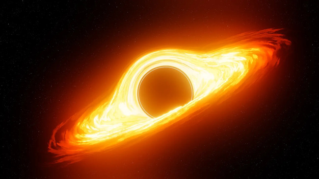

El agujero negro de "Sagitario A"
El agujero negro de Sagitario A: El corazón de nuestra galaxia
El agujero negro de Sagitario A es un agujero negro supermasivo que se encuentra en el centro de la Vía Láctea. Tiene una masa de cuatro millones de veces la masa del Sol y está ubicado a unos 26.000 años luz de la Tierra.
Características
1.- Masa: 4 millones de veces la masa del Sol
2.- Diámetro: 60 millones de kilómetros
3.- Gravedad: 400.000 veces la gravedad de la Tierra
Temperatura: 100 millones de grados Celsius
Descubrimiento
El agujero negro de Sagitario A fue descubierto en 1974 por un equipo de astrónomos dirigido por Bruce Balick.
El equipo observó un grupo de estrellas que se movían de una manera inusual, lo que indicaba que estaban orbitando un objeto invisible y muy masivo.
En 2019, un equipo de astrónomos del Telescopio del Horizonte de Eventos (EHT) logró capturar la primera imagen de un agujero negro.
La imagen muestra una región oscura en el centro de un disco de gas y polvo que se calienta y brilla a medida que se acerca al agujero negro.
El descubrimiento del agujero negro de Sagitario A es un hito importante en la astronomía.
Es la primera vez que se ha visto un agujero negro directamente y proporciona pruebas sólidas de la existencia de estos objetos misteriosos.
El agujero negro de Sagitario A es un objeto fascinante que nos ayuda a comprender mejor el universo. Su estudio nos permite aprender más sobre la formación y evolución de las galaxias, así como sobre la naturaleza de la gravedad.